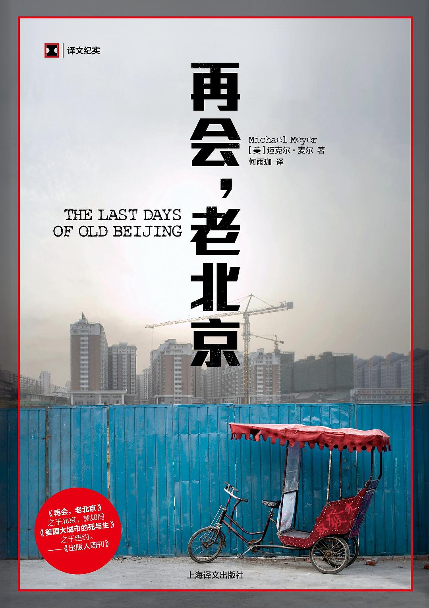

《再会，老北京》

总体观点
真正的非虚构写作必须兼具“足够近”的体感共情与“足够远”的历史视野：唯有亲历老北京大杂院的严冬、旱厕与邻里羁绊，同时走入城建规划档案与世纪变迁史，才能看清胡同消亡背后的复杂全貌。
城市现代化转型中的胡同拆迁绝非非黑即白的单向叙事：在居民渴求现代卫生设施的“告别危房”愿望与官商主导的“假古董”商业造城之间，真实丰茂的平民社区生态与百年市井文脉被连根拔起。
老北京胡同不仅是一片物理砖瓦建筑，更是中国传统“熟人社会”最后的温存聚合体；推土机抹去的不只是弯曲的巷陌，更是几代人建立在空间肌理之上的集体记忆与市井尊严。
核心观点
-
1. 沉浸式田野观察：唯有卸下看客成见融入市井日常，才能触碰真实的民间体温
好的非虚构作家拒绝走马观花浮光掠影，而是通过租住大杂院、任教胡同小学成为社区内部的一员，在与邻里同甘共苦中记录真实的喜怒哀乐。
麦尔搬入大栅栏杨梅竹斜街没有暖气和大杂院单间，清晨与邻居一起端着尿盆排队上公厕、冬天烧蜂窝煤防煤气中毒，真正用肉身体会老北京平民日常。 -
2. 跳出情感泛滥做历史实证：从元大都到奥运前夕，理解北京拆城百年逻辑
哀叹胡同拆除如果仅停留在怀旧情调，就会滑向浅薄的感伤；必须穿插严谨的历史文献考证，厘清北京城从棋盘帝都到工业化都市的改造脉络。
书中设立四篇独立的‘拆之简史’，细致追溯元代刘秉忠规划、明清皇城、民国拆皇城墙修环城铁路，以及建国后梁陈方案被否决、大拆城墙的历史全程。 -
3. 拆迁困境的二律背反：原住民改善恶劣居住条件的渴望与社区文脉瓦解的代价
知识分子眼中的‘老北京诗意风貌’与底层居民的‘水深火热现实’存在巨大鸿沟；许多老街坊迫切渴望搬进有独立卫生间和暖气的高楼，拆迁是矛盾的撕扯。
大杂院里的邻居们一边怀念夏天在胡同口摇蒲扇下棋的热闹，一边抱怨一家三代挤在九平米漏雨阴暗偏房的窘迫，对红油漆刷上的‘拆’字怀着复杂期盼。 -
4. ‘假古董’的商业狂欢：商业推土机打造的仿古步行街永远无法替代真实的活态市井
打着‘抢救老街’旗号的商业旧改往往将原住民彻底迁空，拆除真正具有百年历史的青砖木构，代之以钢筋水泥浇筑的星巴克与旅游纪念品商铺。
前门大街在奥运前夕被推倒重建为平整宽阔的崭新仿清步行街，招商入驻国际奢侈品与连锁快餐，但原汁原味的百年市井生活与老字号灵魂荡然无存。 -
5. 胡同大杂院作为熟人社会的共享网络，在原子化高楼面前显示出惊人的韧性
胡同狭窄的空间逼迫人走出家门产生紧密交集，大妈们的红袖标巡逻、邻里借油换葱、看护小孩，构筑起抵御现代都市冷漠感的温情安全网。
邻居小伙子Mocky与患有老年痴呆症的母亲在胡同里相依为命，街坊四邻顺手帮带饭、关照老人走失，这种草根互助生态搬进封闭塔楼后彻底土崩瓦解。 -
6. 大时代狂飙突进下，小人物的无奈抗争与记忆保卫战构成了历史最动人的回音
在不可逆转的城市更新轰鸣声中，拆迁办的软硬兼施与普通居民的固守、妥协甚至精神失常，构成了繁荣盛世背后最具悲剧力量的人间真实。
炭儿胡同小学的朱老师指着校园里即将被推土机连根拔起的百年老槐树，深情讲述几代师生的记忆；老树的倒下象征着一个时代的无声谢幕。
全书思维导图 · 知识脉络树
全书结构
-
北京老城区地图与引言
呈现大栅栏地区逼仄纵横的胡同地图，交待作者作为和平队志愿者留在北京、特意搬进大栅栏煤市街展开田野记录的创作缘起。
引用马可·波罗对元大都棋盘式整齐街道的赞叹，对照二十一世纪初仅存不到八分之一且随时面临推土机碾压的老北京胡同现状。 -
第一章 走过大前门
漫步在前门箭楼与大栅栏熙攘人流中，描绘老北京外城商业中心的喧嚣活力与奥运前夕已然弥漫的搬迁不安空气。
穿过前门高大的牌楼走入狭窄泥泞的杨梅竹斜街，青砖灰瓦上到处赫然出现被白色圆圈圈住的红色‘拆’字。 -
第二章 叫我梅老师
为了深度融入胡同社区，作者自荐在炭儿胡同小学担任不拿报酬的志愿英语教师，通过孩子们童真的眼睛观察胡同家庭的日常生活。
小学生们好奇地打量这位蓝眼睛高个子的外国外教，在破旧但充满阳光的教室里高声跟读‘Apple’和‘Book’，亲切地称呼他为‘梅老师’。 -
第三章 Mocky与我
结识住在隔壁的胡同本地无业青年Mocky（小伙子），记录他照顾患阿尔茨海默病母亲的辛酸生活与大杂院邻里之间的互助羁绊。
Mocky在大杂院简陋厨房里一边给母亲炒菜，一边向作者抱怨微薄的低保金与无力购买新商品房的现实，展现胡同底层青年的生存困境。 -
第四章 “告别危房”
走访社区居委会与拆迁宣传展板，展现官方‘告别危房、改善人居环境’的宏大口号与大杂院居民在去留之间的激烈算计与迷茫。
居委会墙上张贴着五环外回迁房规划图，配着红光满面的效果图；然而老人们舍不得几步之遥的宣武医院和大观楼影院，迟迟不肯签字。 -
第五章 寒冬降临
生动记录北京冬日胡同的严苛生活考验：刺骨北风、结冰的公用水龙头、清晨倒尿盆与烧煤炉取暖的防煤气中毒警惕。
作者笨手笨脚地在屋里生蜂窝煤炉，浓烟呛得泪流满面，邻居大妈热心地送来引火柴并提醒他一定要装上铁皮烟囱和风斗以防万一。 -
第六章 拆之简史一：燕都旧迹
全书首篇历史专题插叙：追溯北京城市规划的起源，从金中都、元大都刘秉忠的棋盘布局到明清北京城内外双修的形制演变。
考据《周礼·考工记》‘九经九纬、左祖右社’的营城礼制如何在元大都落地，奠定了后世北京城正南正北、胡同严整划一的空间基因。 -
第七章 《北京晚报》
以老北京市民人手一份的《北京晚报》为视角，透视市井大众在报纸中缝寻找二手信息、拆迁补偿标准与老城变迁报道的日常心理。
黄昏时分胡同大爷们坐在马扎上就着茶水翻阅《北京晚报》，热烈争论奥运场馆鸟巢的施工进度以及哪条胡同又给出了每平米补偿新高。 -
第八章 幸福城中好时光
记录春回大地后胡同里复苏的生机：鸽哨声在蔚蓝天际回荡、街边摆棋局的大爷、推车叫卖北冰洋汽水与冰糖葫芦的游商小贩。
邻里妇女在院落中央的水龙头旁一边洗菜一边拉家常，孩童在巷子里追逐玩弹珠，勾勒出一幅充满温润人情味的市井生活风情画卷。 -
第九章 把感觉留住
探讨民间文物保护志愿者与外国摄影师试图用镜头和画笔挽留老北京记忆的努力，反思‘视觉挽歌’在现实利益重锤面前的无力感。
一位退休建筑绘图员十几年如一日用工笔画临摹每一座即将被拆毁的精美门楼与砖雕雀替，叹息画纸是这些百年建筑唯一的坟墓。 -
第十章 春天
春天给破败的大杂院带来了短暂的明媚生机，然而随着拆迁截止日期的步步逼近，街坊邻里之间的神经变得空前紧绷敏感。
搬家卡车频繁开进原本狭窄的巷弄，尘土飞扬中带走了邻居家的衣柜与旧床，留下被掏空的空房与墙上触目惊心的‘拆’字残迹。 -
第十一章 拆之简史二：皇城兴衰
第二篇历史插叙：回顾清末民初紫禁城与皇城由神圣封闭走向世俗开放的过程，以及近代西方列强入侵对北京城古建筑的重创。
详述辛亥革命后紫禁城三大殿对外开放、中山公园辟建，以及军阀混战时期城门楼遭受炮击的沧桑往事，展现皇权物理空间的世俗化。 -
第十二章 “去贫化”的贫民窟
从城市社会学角度剖析大栅栏的‘贫民窟化’与‘去贫化’工程：当原住民被贴上贫困、脏乱标签后，驱离与置换便获得了道德合法性。
对比官方城市规划展厅里光鲜亮丽的CBD摩天大楼模型与大栅栏阴暗逼仄的积水院落，揭示现代化话语对旧城空间的污名化与边缘化。 -
第十三章 抢救老街
记录建筑遗产保护学者与文化界人士呼吁保护大栅栏历史街区、推行‘微循环有机更新’的艰辛建言与被商业资本瓦解的无奈现实。
知名文保人士向政府提交多份保护大栅栏京剧名伶故居与老会馆的建议书，然而商业地产开发公司早已拿到拆迁批文，推土机引擎轰鸣未止。 -
第十四章 夏日大回收
聚焦夏日胡同里穿梭的河南、安徽籍废品回收流动大军，展现拆迁废墟如何成为滋养庞大拾荒与旧建材交易黑市的肥沃温床。
收废品的小贩蹲在被砸烂的四合院瓦砾中，熟练地用铁镐剔除清代青砖上的灰浆，以几毛钱一块的价格将这些百年老砖打包卖给郊区别墅开发商。 -
第十五章 过去时与将来时
站在即将到来的2008年北京奥运会门槛上，审视整座城市为迎合全球化目光而开展的空前激进的市容整顿与面貌重塑。
沿街所有破旧砖墙被涂上整齐划一的灰漆，沿途挂满了‘同一个世界，同一个梦想’的巨幅宣传横幅，城市在极力抹平过去的岁月褶皱。 -
第十六章 拆之简史三：民国首都的现代化之路
第三篇历史插叙：回顾民国时期朱启钤主持市政改造、辟建东西长安街、开通环城铁路的温和渐进式现代化尝试。
深入评价民国市政督办朱启钤在保留正阳门城楼的同时开辟瓮城通道、修筑沥青马路的卓越规划，展示尊重历史肌理的现代转型典范。 -
第十七章 朱老师：树的记忆
炭儿胡同小学的朱老师带领孩子们与作者在校园百年古槐下告别，倾诉对即将拆迁合并学校的不舍与对树木年轮的眷恋。
朱老师轻抚着粗糙的槐树皮，回忆三十年前自己第一次登上讲台时的情景；学校宣布即将迁入现代化合并小学，老槐树的去留成了未解谜团。 -
第十八章 “他有病了你不给他治，是你的责任”
借胡同老居民反驳官方‘危房不可救药必须推倒’的一句朴素哲言，直击城市保护的核心伦理：房子病了应修缮，岂能以生病为由判其死刑？
一位住在漏雨祖宅里的老工匠激动地向前来动迁的干部质问：这栋明末的老房子就像老父亲，生病了做儿女的应该带他看病，哪有直接拉去火化的道理？ -
第十九章 老寡妇的故事
深入走访胡同深处独居多年的遗孀老人，通过她一生经历抗战、内战、公私合营与动荡岁月的叙述，打捞女性视角下的大栅栏私人史。
老妇人翻开泛黄的旧相册，指着照片里在门前台阶上嬉闹的早已亡故的丈夫与远走海外的儿女，坚决拒绝离开这间承载了她一辈子眼泪与欢笑的老屋。 -
第二十章 拆之简史四：“毛泽东时代”北京的工业浪潮
第四篇历史插叙：反思五十年代将消费性帝都改造为生产性工业城市的激进政策，以及梁思成保护古城墙方案被弃用的历史遗憾。
详细记录五十年代将天安门广场扩建为可容纳百万人的政治集会空间、拆除内外城城墙以修筑二环路与地下铁道的全过程，揭示工业至上的时代印记。 -
第二十一章 回音壁
作者在临近搬离大栅栏之际造访天坛回音壁，聆听声音在圆形光滑石壁上传递的奇迹，将胡同深处的平民呼声隐喻为历史深处不灭的回响。
在天坛苍翠的古柏林中，作者久久贴着回音壁倾听远处的低语，仿佛听到了大栅栏无数已被推倒的院落与流散街坊在这个时代留下的最后余音。 -
尾声
大栅栏改造一期工程竣工，作者重访杨梅竹斜街，记录被粉刷一新的商业步行街与彻底失落的旧日烟火，平静而伤感地与老北京告别。
走在平整的花岗岩新街道上，过去熟悉的公厕、早点摊和煤球堆不见踪影，取而代之的是设计精巧的文创咖啡店，然而老街坊们早已不知散落何方。 -
致谢与译后记
作者致谢所有曾向他敞开家门的大栅栏邻里与炭儿胡同小学师生；译者何雨珈以细腻笔触回溯翻译心路，感怀老北京消逝的市井温情。
译者何雨珈在后记中动情写道，麦尔这本书不仅是一个美国人对北京的告别，更是所有生活在这片土地上的人对一段回不去的纯真市井时光的深情回眸。